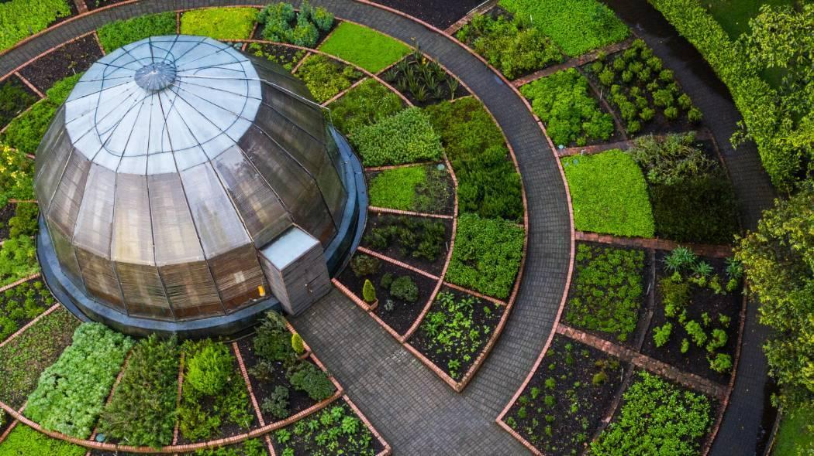
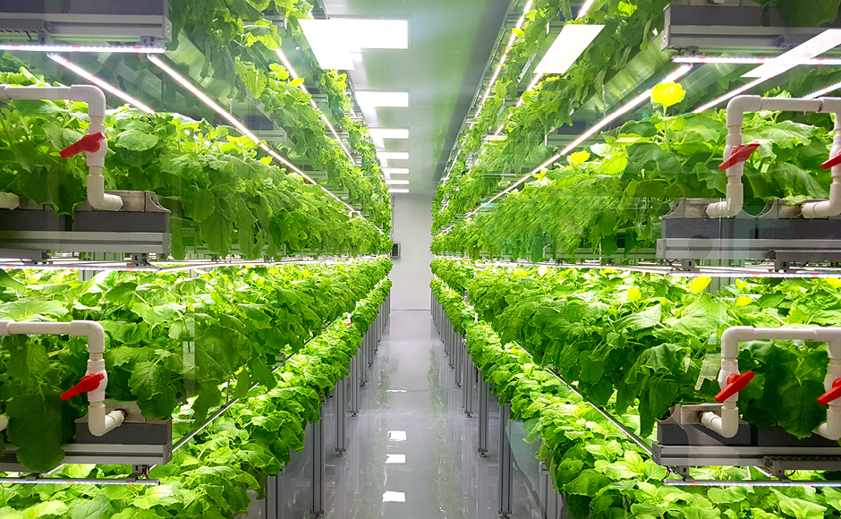
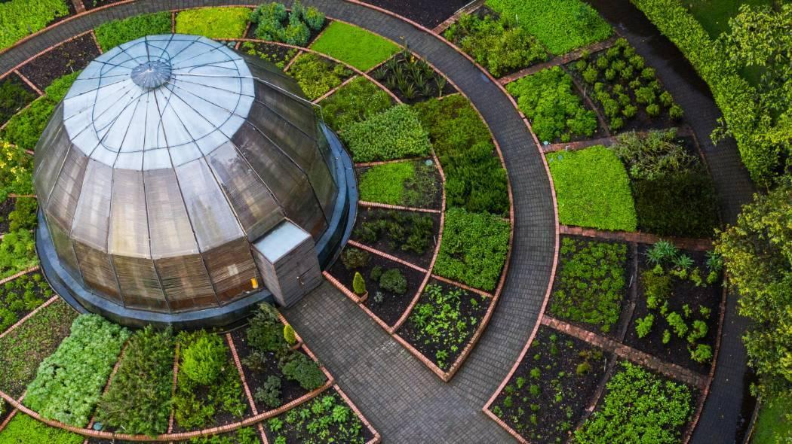
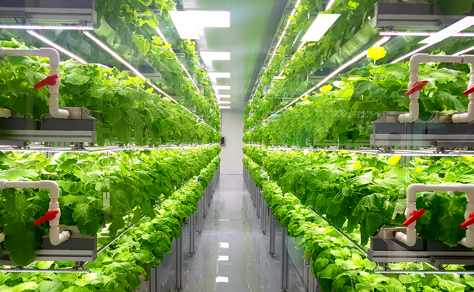
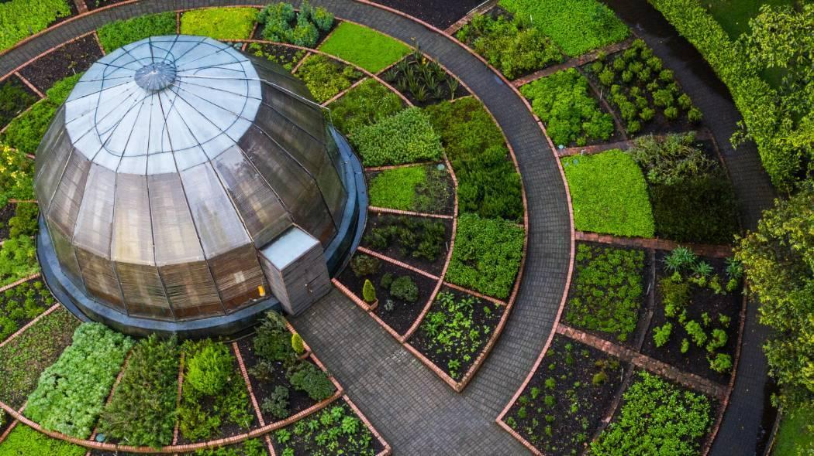
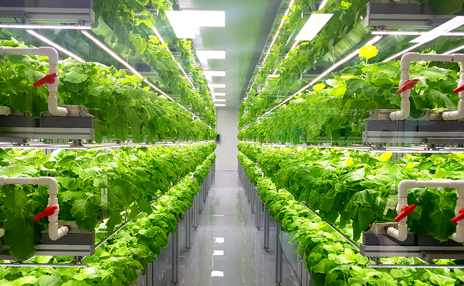

Una huerta automatizada es un sistema moderno que usa tecnología para facilitar el cultivo de alimentos. Mediante sensores y automatismos, se controlan el riego, la luz, la humedad y otros factores que optimizan el crecimiento de plantas.


Ahorro de agua gracias al riego por sensores inteligentes.
Producción constante de alimentos frescos y naturales.
Requiere poco mantenimiento diario.
Ideal para personas sin experiencia en jardinería.
Estos son los cuidados básicos para mantener tu huerta en perfecto estado:
Las huertas automatizadas son una alternativa innovadora y sostenible que permite cultivar de manera eficiente en cualquier entorno. Combinan la tecnología con la naturaleza para acercar la agricultura a los espacios urbanos.